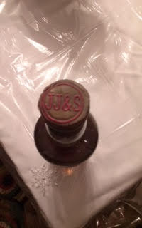
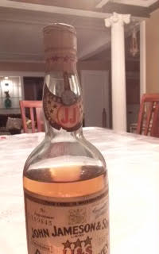

NOTE: This forum is no longer active. This is an archive copy of the forum as it was on 10 March 2018.
Vintage Jameson Bottle
5 posts
• Page 1 of 1
Vintage Jameson Bottle
 by whiskythief » Tue Jan 27, 2015 5:00 am
by whiskythief » Tue Jan 27, 2015 5:00 am
I recently acquired a vintage bottle of Jamesons. It was part of an estate sale from an old diplomat family, who kept meticulous logs of bottles gifted to them. These logs led the person who sold this bottle to think it was a 1919 bottling, which is what he claimed. Im not so certain, and havent found a way to precisely place the date. Does anyone have any advice on pinning down the year? There is a serial number on the label, dont know if that can be of help. Any insight would be appreciated! Heres some pics..
- whiskythief
- New Spirit
- Posts: 3
- Joined: Tue Jan 27, 2015 4:09 am
Re: Vintage Jameson Bottle
 by whiskythief » Tue Jan 27, 2015 5:04 am
by whiskythief » Tue Jan 27, 2015 5:04 am
Cant seem to post a pic, which isnt very helpful..
- whiskythief
- New Spirit
- Posts: 3
- Joined: Tue Jan 27, 2015 4:09 am
Re: Vintage Jameson Bottle
 by Good Whiskey Hunting » Wed Jan 28, 2015 6:52 pm
by Good Whiskey Hunting » Wed Jan 28, 2015 6:52 pm
Here's those photos.
- Attachments
-
- 
- unnameJJ7#3.jpg (7.71 KiB) Viewed 802 times
-
- 
- JJ7#2.jpg (9.34 KiB) Viewed 802 times
-

- JJ.jpg (9.85 KiB) Viewed 802 times
Four blessings upon you - Older whiskey - Younger women - Faster horses - More money
https://twitter.com/potstillwhiskey
https://facebook.com/potstillwhiskey/
https://www.instagram.com/potstillwhiskey/
https://twitter.com/potstillwhiskey
https://facebook.com/potstillwhiskey/
https://www.instagram.com/potstillwhiskey/
-

Good Whiskey Hunting - Fully mature Cask
- Posts: 1832
- Joined: Tue Dec 01, 2009 11:43 pm
- Location: Wexford
Re: Vintage Jameson Bottle
 by TheWhiskeyBro » Thu Jan 29, 2015 9:59 am
by TheWhiskeyBro » Thu Jan 29, 2015 9:59 am
Can you post the exact reference to the British monarch in the top right hand corner, that would help.
- TheWhiskeyBro
- Hogshead
- Posts: 962
- Joined: Tue Mar 17, 2009 11:44 am
- Location: Sandyford, Dublin
Re: Vintage Jameson Bottle
 by whiskythief » Fri Jan 30, 2015 11:59 am
by whiskythief » Fri Jan 30, 2015 11:59 am
Hey, firstly thanks,Good Whisky Hunting for getting those pics up! And no, i cant currently post the monarch reference, because its covered with a tag labeling who it originally came from. Its a US senator, cant quite read the name and im truing to puzzle it out so dont want to try and remove it just yet.
What i do know is judging by the bottle manufacturer, and the lack of government warning stamped into the glass, it is almost definitely between 1913 and 1933.
Is there any way to research it by the serial number on the bottle?
What i do know is judging by the bottle manufacturer, and the lack of government warning stamped into the glass, it is almost definitely between 1913 and 1933.
Is there any way to research it by the serial number on the bottle?
- whiskythief
- New Spirit
- Posts: 3
- Joined: Tue Jan 27, 2015 4:09 am
5 posts
• Page 1 of 1